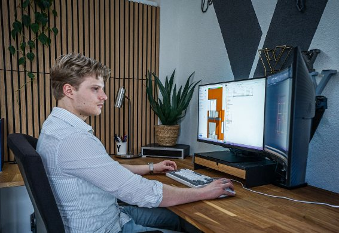

Over Tekenbureau Winter : Passie voor architectuur
Welkom bij Tekenbureau Winter dat, uw partner in bouwkundig tekenwerk. Ik ben een ambitieuze, afgestudeerde bouwkundige student die zijn droom, het runnen van een eigen architectenbureau, nu al laat uitkomen. Mijn diepgaande liefde voor mijn vak drijft mij om elk project met ongekende toewijding te benaderen. Snelheid, precisie en een uitstekende samenwerking met de klant staan centraal in mijn aanpak. Ik streef ernaar uit te groeien tot een volwaardig architect en neem u graag mee op deze reis. Met Tekenbureau Winter kiest u voor een professionele, luxueuze en moderne uitstraling voor een betaalbare prijs.
Onze droom, uw realiteit
De reis van Tekenbureau Winter begon vanuit een levenslange droom: het oprichten van mijn eigen architectenbureau. Als afgestudeerde bouwkundige ben ik momenteel bezig met een hogere studie om de titel van architect te behalen. Om alvast waardevolle ervaring op te doen en naamsbekendheid op te bouwen, heb ik Winter details opgericht. Elk project dat ik aanneem, is een stap dichter bij die droom en ik giet al mijn passie en kennis in het creëren van onderscheidend en functioneel tekenwerk. Ik wil dat Tekenbureau Winter staat voor innovatie, kwaliteit en een frisse blik op architectonische uitdagingen.

Wat maakt ons uniek?
Bij Tekenbureau Winter geloof ik in een persoonlijke aanpak die verder gaat dan alleen tekenen. Als ambitieuze student, gedreven door de passie voor architectuur, bied ik niet alleen snelle service, maar ook een ongeëvenaarde samenwerking met u als klant. Mijn doel is om uw visie tot in de kleinste details te vangen en te vertalen naar realistische en esthetisch verantwoorde ontwerpen. Ik ben constant bezig met de nieuwste trends en technieken, wat resulteert in een moderne en luxe uitstraling die toch betaalbaar blijft. Ik ben ervan overtuigd dat mijn enthousiasme en streven naar perfectie zich direct vertalen in de kwaliteit van uw project.
Voor wie werken wij?
Tekenbureau Winter is er voor iedereen die professioneel, modern en betaalbaar tekenwerk zoekt. Of u nu hulp nodig heeft bij de keuring van tekenwerk voor de gemeente, of droomt van het realiseren van een prachtige overkapping, een functionele aanbouw, een praktische opbouw, of een stijlvolle dakkapel, ik sta voor u klaar. Daarnaast help ik u graag met nieuwe binnenindelingen die de ruimte optimaal benutten. Ik bied ondersteuning aan zowel particulieren als bedrijven, inclusief bouwbedrijven en architecten die extra tekenkracht nodig hebben.